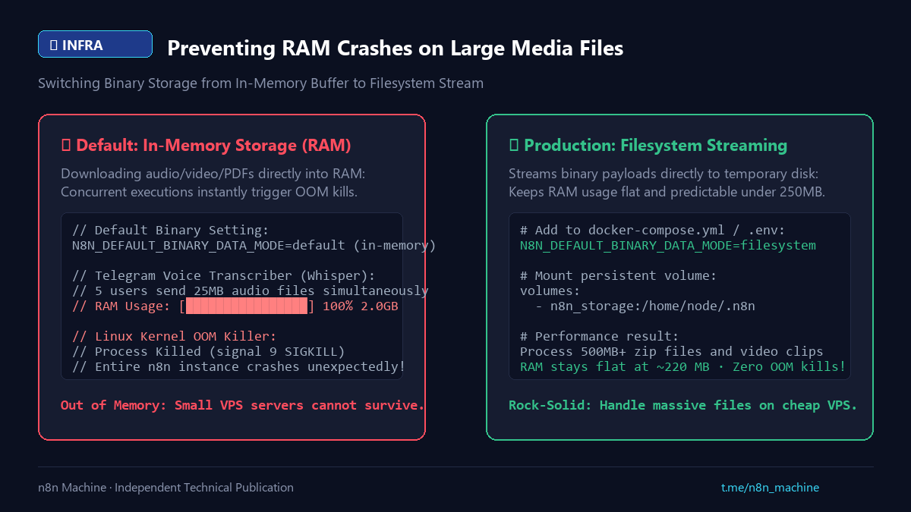

Digest
Preventing VPS RAM Crashes on Large Media Files
- Published
- Checked against
- docs.n8n.io
- Status
- Corrected, revision 2

Binary data kept in memory can kill a small VPS.
01Symptom and cause
- Transcribing voice messages or building large PDFs ends with
OOMKilled (exit 137). - By default n8n holds binary data in RAM; a few 25 MB files use up a cheap server.
02Fix
- Set
N8N_DEFAULT_BINARY_DATA_MODE=filesystemso binaries stream to disk. - Watch memory after the change and size the container limit to the largest file you expect.
Sourcen8n Binary Data Docs